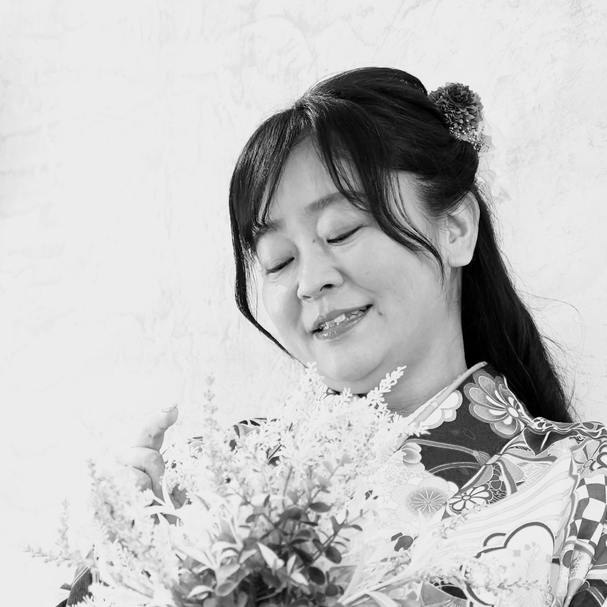

Project Image
Web Application
Project Title 01
UX ResearchUI DesignFrontend
課題の発見からデザイン、実装まで一貫して担当。ユーザビリティテストを通じて継続的に改善。
+45% Conversion
UI/UX Designer & Web Engineer
実務経験5年以上の実装力と、人間中心設計（HCD）の学術的視点。
JAISTで研究を続けながら、エビデンスに基づいたデザインを実践しています。

Tsujita Nozomi
JAIST 修士課程 / HCD研究
Philosophy
調査・分析
ユーザーリサーチとデータ分析に基づき、課題の本質を特定。仮説を立て、検証可能な形に落とし込みます。
設計・実装
デザインから実装まで一貫して担当。プロトタイプを素早く形にし、フィードバックループを回します。
検証・改善
ユーザビリティテストと定量データで効果を検証。継続的な改善により、成果を最大化します。
Selected Works
Web Application
課題の発見からデザイン、実装まで一貫して担当。ユーザビリティテストを通じて継続的に改善。
+45% Conversion
Mobile App
ユーザーインタビューに基づくペルソナ設計と、再利用可能なデザインシステムの構築。
4.8 App Rating
SaaS Product
複雑な業務フローを整理し、直感的なUIを設計。フロントエンド実装も担当。
-30% Support Tickets
Credentials
2024 - Present
北陸先端科学技術大学院大学（JAIST）
修士課程 / 人間中心設計・UX研究
2015 - 2019
大学名
学部名 / 専攻
2019 - Present
実務経験 5年以上
UI/UXデザイン、フロントエンド開発、プロダクト設計
Design
Development
Research